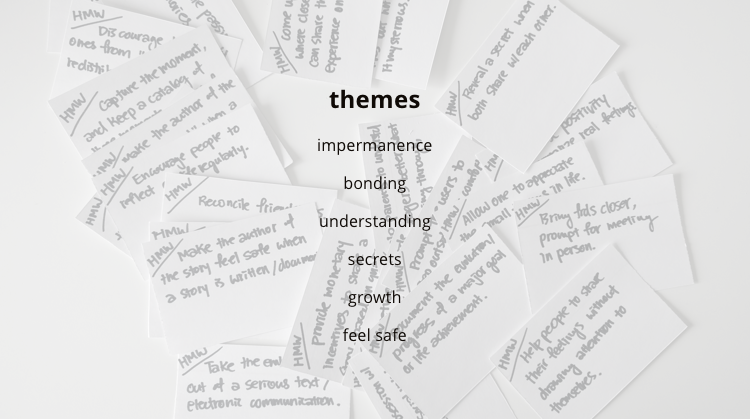
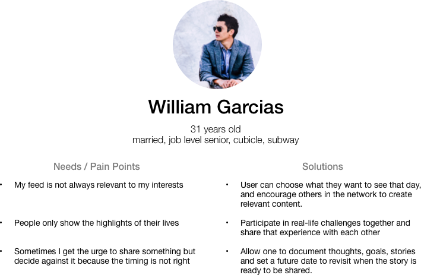
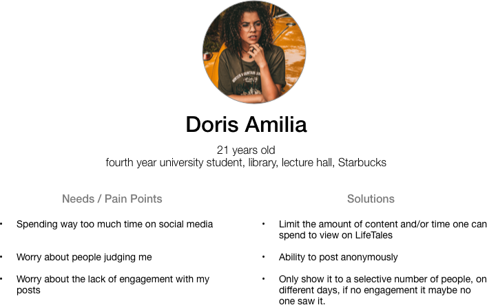

LifeTales
"how can LifeTales inspire users to share and create more stories?"
Introduction
Earlier in March, I went to a DesignSprint workshop, where LifeTales was the subject of our analysis. I had so much fun at the event and decided to continue to work on this problem in my own time. This case study involved a lot of research and user testing, and I decided to create a prototype based on high-fidelity wireframes for the final deliverable. At the time I did this case study, the LifeTales app was not available to the public, so I did not have access their existing design. I focused on the chosen features in this case study. The project took less 2 weeks, roughly 60hrs.
View Final DesignThe Problem
Content is what users of any platform come for. Whether it's just a few words, a couple of pictures, or a long-winded news content. Without content, the users will not engage. LifeTales differentiates itself by encouraging close network of friends and family to share the stories of their lives.
Nadar, the product manager from LifeTales provided the following problem statement:
“How can LifeTales inspire users to share and create more stories?”
The Process
My plan for this project was to come up with ideas in bulk to push myself to think outside of the box and consider alternatives that may not be obvious at first, then based on the best ideas conduct a survey to validate user needs and preferences before designing and prototyping and lastly validating the likelihood of the user using these features.
Ideation
I came up with 24 ideas based on the problem statement of "inspiring users to create stories". In order to be more efficient with the survey, I grouped the ideas using affinity mapping by function and also identified 6 repeating themes.
Research
I create a survey to find out people's likes and dislikes on the current social netowrk, the content of their online activities, differences in intraction with friend and family, as well as their reactions on the 6 themes identified in the ideation phase. See survey findings.
People generally don't want to know other people's secrets, but do want to know which aspects others keep secrets in.
Insight
Personas & Storyboard
I created 2 personas. The 31 year-old William representing the more mature crowd that have a stable personal and work life and a prefer a closer network; and 21 year-old Doris Amilia representing the late teen, early 20s who have a larger network (i.e. fellow students) and face much more uncertainties in life.

Jobs to be Done
Based on the storyboards above, I identified the following scenarios and wrote job stories which follows the format of situation, motivation and expected outcomes.
- When I want to procrastinate during the day by checking social media, I want to be limited by the time and how much content I can consume on the app, so that I do not waste time mindlessly scrolling through my feed and become either disappointed about the lack of update or addicted to the behavior.
- When I am reading through my LifeTales feed, I want to receive content that I am actually interested in that day, so I can feel good about what I read.
- During the day, when I do not have access to LifeTales stories, I want to submit topics to my network, so that I can look forward to my LifeTales feed at night.
- During the day, I want to be prompted the topics that my network is interested in that day, so I can post relevant content if I happen to have the material, share my experience and my life.
- When I am pumped to share something, whether it’s a new idea, a new goal or a big accomplishment, I want to write it down, save it and set a future date for publishing. When that day comes, I want to be prompted, be able to edit or write commentary about the particular story and choose to share it or not.
Prototype & Test
Final Design
Anti-procrastination
Stories and topic responses are open at 9pm everynight to prevent people from wasting time on the app during school and work hours.
On top of helping users to stay productive during the day, the delay and limited access can build anticipation which encourages the user to use it on the daily basis.
Topics
User can submit topics to their network, which will be made available during the day. Others can reply to the topic but the reply will only be made available after 9pm. This helps the user to get access to content that he/she is interested in, and also encourages others to share their stories.
Secret Stories
A lot of survey response indicated one often have the urge to share something but end up not to because of the fear of judgement, inappropriate timing.
Secret stories let the user to document their thoughts in the moment without the pressure to share the story right now. They just might share it in the future.
Lessons Learned
During this case study, I spent majority of my time in research, analysis and testing. The result is that I am much more confident in the features I'm designing, since it comes directly from user feedback. In addition, the problems revealed through user testing are enlightening. These test results led me an "add pattern" that I did not think of initially, eventhough I already did 6 variations of the "add story/add topic" combo before that. The lesson here is, what is obvious to the designer is not always obvious to the user.
There are two things I would do differently, one is better planning before the design: have the topics, stories and use cases ready, so the design flows like a cohesive story and would be ready to use in the test. The second thing would be to conduct more structured user test. The testers are recruited in coffee shops, on the streets, guerrilla style, so I was under a lot of time pressure, some questions were missed as a result.
Disclaimer
This is a personal project, I am not affiliated with LifeTales. Images are my own and stock photos are from Unsplash.
Like what you read? There's more!

Ethical Shopper
a responsive e-commerce site
Styaile
a mobile app design